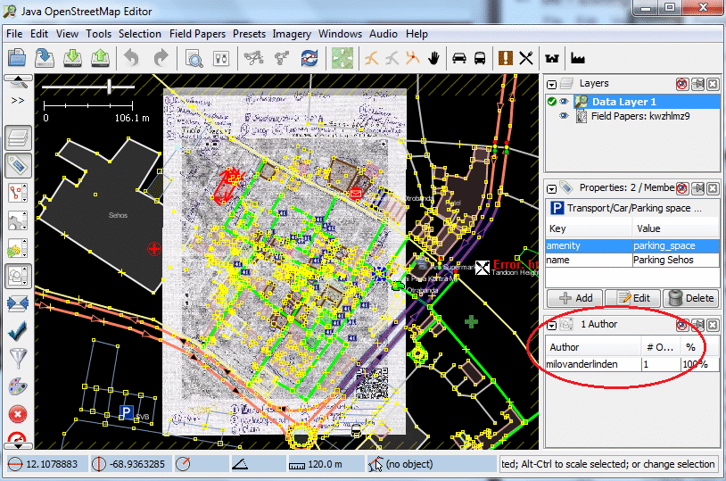

Module 6: Editing OpenStreetMap with JOSM¶
Learning Objectives
Download OSM data in the area you want to edit
Select layers
Edit OSM data
Edit and understand tags
Upload OSM data
Save OSM files
In Module 3 we installed JOSM and began drawing our first points, lines, and shapes. We added presets to these objects to attach information about them. At the end, you were able to draw your own map in JOSM.
Drawing maps was an exercise to learn JOSM and learn how to draw places on the map. But our maps were not accurate, because we had not yet included location. In the past two modules we have examined two tools, GPS and Field Papers, which allow us to collect actual locations of places. These locations are represented by coordinates.
Drawing a real map, that is, a map where all the points, lines and shapes are in their proper location, is no different than drawing the maps we drew previously. But now, we will utilise our GPS points and tracks, and our Field Papers, to draw similar maps at their correct locations on the planet.
In this module we will learn how to edit the map on OpenStreetMap and add our improvements. We’ll learn the basic cycle of mapping on OSM:
Download data
Edit and add objects on the map
Upload changes to OSM
See the changes on the map!
1. Exploring JOSM¶
Let’s begin by exploring a little more in JOSM.
Open JOSM.
Load your gpx file (tracks and/or waypoints) and your Field Paper in JOSM, as in the previous modules. It is not necessary to open both, but you can if you want. Refer to the previous two modules if you don’t remember how to open these in JOSM.
JOSM has many different buttons and panels. We are already familiar with the main window - this is the map window, and it is where most of the action takes place. Here you view, edit, and add to the OSM data.
To the right of the map window are a series of panels, which each do something different. When you first install JOSM several panels are shown by default, such as Layers, Properties and Selection. When you select a point, line or shape in the map window, it is shown in the Selection panel. Information about the object is shown in the Properties panel, and the username of the author of that object is shown in the Authors panel.
On the left side of JOSM, there are several toolbars which consist of many buttons. On the uppermost toolbar are different buttons which change what you can do with your mouse. You are already familiar with the first two, the Select tool and the Draw tool. The other tools make it easier to zoom in, delete an object, draw a shape or create a line that is parallel to another line.
Below these tools are many more buttons. These buttons control what you see on the right side of JOSM. Using these buttons you can open and close the boxes on the right, such as Properties, Selection and Author.
1.1. Downloading OSM Data¶
Remember the cycle of editing OSM described in the introduction of this module? Download, edit, save. Before we can edit the map, we must download the existing OSM data in our area.
When you open a gpx track or Field Paper, the map window will show what you have opened, and will automatically move to the correct coordinates. Look in the bottom left corner of JOSM. Notice the two numbers, which are the latitude and longitude (coordinates) of your mouse cursor.
Because our map window is already showing the area that we want to edit, it is easy to download the OSM data for this area. Go to . This opens the Download window. This can be accessed more simply by clicking the Download button, shown here:
When the download window opens, you should see a map with a pink box drawn on it. If you don’t see the map, click on the tab marked Slippy map.
The pink box represents the area of the map that you would like to download for editing. Unless you have moved the map window since you opened your GPS file or Field Papers, the box should be drawn around the correct area. However if you would like to download a larger area, draw a new box. To do so, click on the map, hold your left mouse button down and drag the mouse to create a box. Release the mouse button to finish drawing the box.
When you are satisfied with the size and location of the box, click Download at the bottom of the window. JOSM will get the data for this area from OSM and open it in your map window for editing.
2. JOSM Layers¶
Open your GPS file and downloaded data from OSM, if you haven’t already. Notice that when you open a file, add Field Papers or download from OSM, another item is added to the Layers panel on the right side of JOSM. Your Layers panel may look something like this:
Each item in this list represents a different source of data that is open in the map window. In the example above, “Data Layer 2” is the OSM data that we want to edit. “Markers” are the waypoints from the GPS, and “30 Juni 2011.gpx” is the track from the GPS. Finally, “Field Papers” is the layer created when we added our Field Paper into JOSM.
Add the Bing imagery layer, which shows satellite imagery, by going to .
To hide one of the layers, select it with your mouse and click the Show/Hide button, which looks like this:
The layer will disappear in the map window. Click Show/Hide again, and it will reappear.
Remove a layer by selecting it and clicking the Delete button:
Lastly, it’s important to know that you can only edit the layer that is considered “Active” by JOSM. If you are unable to edit the map in your map window, it’s probably because you don’t have the correct layer set as active. Most layers, such as GPS points, Field Papers, and satellite imagery, can’t be edited. The only layers that can be edited are data from OSM, which are usually called “Data Layer 1”.
To make a layer active, select it in the Layers panel, and click on the Activate button:
3. Editing¶
The next step is to edit the map and add new items. This is not always easy at first, but with practice you will get better and better. Note that you can select tools in JOSM by clicking their buttons in the toolbar, or you can use keys on the keyboard as shortcuts. The shortcut keys are indicated in parentheses below.
To move a point, line or shape, use the Select tool (S). Click on an object and drag it where it should be. This can be used to correct the location of items that have been put in the wrong place.
Use the Draw tool (A) to draw new points, lines, and shapes. Attach attributes to these objects by selecting from the menu, as we did in Module 3.
Remember that your GPS points and Field Papers don’t automatically go into OSM. You need to add them to the OSM map digitally using the Draw tool. But your points, tracks, and Field Papers can be seen in the background as a guide.
Let’s assume that you saved a waypoint on your GPS named “030” and wrote in your notebook that 030 is a school. To add this point into OSM, select the tool, and double-click on top of point 030 in your map window. This will create a point. Then go to the menu, and find the preset for school. Enter the name of the school and click Apply Preset. Do the same to add lines and shapes.
5. Uploading Changes¶
After we have made a couple of changes to improve the map, we need to upload those changes to OSM. To save changes, we must be connected to the internet.
Go to . This opens the Upload window. This can be accessed more simply by clicking the Upload button, shown here:
The window that appears shows a list of the objects that you are adding and the objects you are modifying or deleting. In the box at the bottom you are asked to provide a comment about the changes that you are making. Type in here a description of your edits.
Click Upload Changes.
If this is your first time saving changes to OSM, you will be asked for the username and password that you created in Module 2. Enter them in the window that appears. If you check the box in this window, your username and password will be saved and you won’t need to enter them again in the future. Click Authenticate.
Wait a few seconds for your changes to be uploaded, and then you are done! You have made your first edits to OSM. You may continue editing to add all your points if you wish. Always be sure to upload your changes before closing JOSM.
After you have uploaded all your changes, you can see the updated map.
Open your internet browser and go to openstreetmap.org
Move the map to the area that you edited.
You should see your changes now on the map! If you don’t, try pressing CTRL+R to refresh the web page. Sometimes the map doesn’t update properly and needs to be reloaded.
What if you don’t see your changes? Don’t worry - it may take a few minutes for the changes to be shown on the map. Also, check your additions in JOSM to make sure that you added them correctly. A good general rule is, if your point has an icon in JOSM, then it should be seen on the main map on the OSM website.
6. Saving OSM files¶
Sometimes after you download some OSM data, you may wish to save it so that you can edit it offline, and then upload it later when you have internet access again.
To save an OSM file, make sure that it is the active layer in the the Layers panel. Go to . Choose a location for the file and give it a name. It can also be saved by clicking this button:
You can now close JOSM and your data will be saved. When you want to open the file again, simply open JOSM and go to .
Note
While it is possible to download OSM data, save it, and then upload later when you are connected to the internet, this may cause problems, especially if a lot of time passes between the time you download and the time you upload the changes. If another OSM user edits the same area and the same objects during this time, it may cause conflicts to occur. Try not to let too much time pass between downloading and uploading data.
7. Using keyboard shortcuts¶
It can be dizzying to click over and over again between the various tools and menus in JOSM. Fortunately, there are shortcuts for most actions in JOSM with a simple press of the keyboard. Here is a list of commonly used keyboard shortcuts and their associated functions:
S: Select tool (select objects)
A: Draw tool (draw objects)
Z: Zoom tool
Minus (or Ctrl + >): Zoom out
Plus (or Ctrl + <): Zoom in
P: Split Way
C: Combine Way
O: Align in Circle (set the points into a circle)
L: Align in line (set the points into a straight line)
Q: Orthogonalise (make into a square shape)